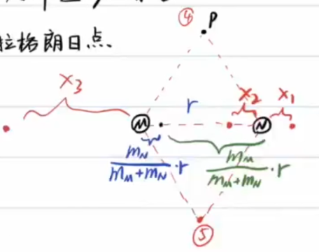
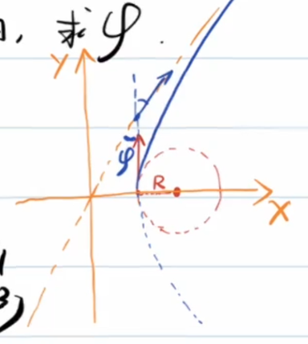

<meta data-alternate="https://freshmark.sunisalex.org/en/posts/physics/celestial-movement/" data-article="true" data-canonical="https://freshmark.sunisalex.org/posts/physics/celestial-movement/" data-description="本文系统介绍了天体运动中的几个核心专题，包括拉格朗日点的求解与小量近似、双曲线与抛物线轨道问题、开普勒第一定律的微积分推导，以及若干典型习题的详细解答。" data-freshmark-page data-title="天体运动:最终章 — Freshmark"><main><header class="container article-header"><a href="/" class="back-link">← 返回全部文章</a><p class="eyebrow article-subject">物理</p><h1>天体运动:最终章</h1><p class="article-dek">本文系统介绍了天体运动中的几个核心专题，包括拉格朗日点的求解与小量近似、双曲线与抛物线轨道问题、开普勒第一定律的微积分推导，以及若干典型习题的详细解答。</p><div class="article-meta"><time datetime="2026-06-17">2026年6月17日</time><span>5 分钟阅读</span><span>物理竞赛 · 微积分</span><span class="view-count" data-article-view-count hidden>本文访问量 <strong data-article-views></strong></span><a href="index.md" download>下载 Markdown</a><button type="button" class="article-share" data-share-article data-share-text="本文系统介绍了天体运动中的几个核心专题，包括拉格朗日点的求解与小量近似、双曲线与抛物线轨道问题、开普勒第一定律的微积分推导，以及若干典型习题的详细解答。" data-share-title="天体运动:最终章"><span data-share-label>分享文章</span></button><output aria-live="polite" class="visually-hidden" data-share-status role="status"></output></div></header><div class="article-wrap"><aside class="toc"><div class="toc-head"><p>本文目录</p><button type="button" class="toc-toggle" aria-expanded="false" aria-label="展开或收起目录" data-toc-toggle><span class="toc-toggle-label">目录</span><span class="toc-toggle-icon" aria-hidden="true"></span></button></div><nav aria-label="目录" class="toc-links" data-toc-links><a href="#天体运动综合" class="toc-level-1">天体运动综合</a><a href="#一拉格朗日点" class="toc-level-2">一:拉格朗日点</a><a href="#情况一" class="toc-level-4">情况一</a><a href="#情况二" class="toc-level-4">情况二</a><a href="#情况三" class="toc-level-4">情况三</a><a href="#例1" class="toc-level-3">例1</a><a href="#问题" class="toc-level-2">问题</a><a href="#二双曲线轨道" class="toc-level-2">二:双曲线轨道</a><a href="#三抛物线轨道" class="toc-level-2">三:抛物线轨道</a><a href="#习题" class="toc-level-1">习题</a><a href="#例1-2" class="toc-level-2">例1</a><a href="#例2" class="toc-level-2">例2</a><a href="#例3" class="toc-level-2">例3</a><a href="#开普勒第一定律由万有引力公式出发" class="toc-level-1">开普勒第一定律(由万有引力公式出发)</a><a href="#快速记忆" class="toc-level-2">快速记忆</a><a href="#例4" class="toc-level-2">例4</a></nav></aside><article class="prose"><!--more--><h1 id="天体运动综合">天体运动综合</h1><h2 id="一拉格朗日点">一:拉格朗日点</h2><p>三个天体M,N,P,满足<span class="math-expression math-inline" data-math-source="m_M\gt\gt m_N\gt m_P"></span></p><p>请问空间中存在几个点,使得P在该点能相对M,N静止(M,N,P形成稳定转动)</p><p>由万有引力定律中的朝花夕拾,知:</p><p>如果P,M,N不共线,则P,M,N形成正三角形,这样便找出了2个点.</p><p>以M,N为转动惯性系,则P受到由M,N质心指向P的离心力和M,N对P的引力.</p><p>由于<span class="math-expression math-inline" data-math-source="m_M\gt\gt m_N\gt m_P"></span>,近似认为三者旋转的中心为M,N质心</p><p><picture class="responsive-picture"><source srcset="image.freshmark-19159c86de7f-456w.avif 456w" type="image/avif"><source srcset="image.freshmark-19159c86de7f-456w.webp 456w" type="image/webp"></picture></p><h4 id="情况一">情况一</h4><p>从左向右,分别为M,N,P <span class="math-expression math-display" data-math-source="\begin{gathered} \frac{Gm_Pm_M}{(r+x_1)^2}+\frac{Gm_Pm_N}{x_1^2}=m_Pw^2(r+x_1)\\ G\frac{m_Mm_N}{r^2}=m_Nw^2r\frac{m_M}{m_M+m_N}\\ \frac{Gm_M}{(r+x_1)^2}+\frac{Gm_N}{x_1^2}=G\frac{m_M+m_N}{r^3}(r+x_1)\\ m_M(3r^2x_1^3+3rx_1^4+x_1^5)=m_N(r^5+2r^4x_1-3r^2x_1^3-3rx_1^4-x_1^5)\\ \end{gathered}" data-math-display></span></p><p>这里引入一种<strong>小量近似</strong>的方法:我们先假设<span class="math-expression math-inline" data-math-source="x_1"></span>相对<span class="math-expression math-inline" data-math-source="r"></span>为小量,然后检查结果的合理性.</p><p><span class="math-expression math-display" data-math-source="\begin{gathered} m_M(3r^2x_1^3)=m_Nr^5\\ x_1=\sqrt[3]{\frac{m_N}{3m_M}}r\lt\lt r \end{gathered}" data-math-display></span></p><p>小量近似合理.</p><h4 id="情况二">情况二</h4><p><span class="math-expression math-display" data-math-source="\begin{gathered} \frac{Gm_Pm_M}{(r-x_2)^2}-\frac{Gm_pm_N}{x_2^2}=m_Pw^2(r-x_2)\\ \frac{Gm_Pm_M}{(r-x_2)^2}-\frac{Gm_pm_N}{x_2^2}=\frac{Gm_P(m_M+m_N)}{r^3}(r-x_2)\\ \end{gathered}" data-math-display></span></p><p>类似有:<span class="math-expression math-inline" data-math-source="x_2=\sqrt[3]{\frac{m_N}{3m_M}}r"></span></p><h4 id="情况三">情况三</h4><p>由于<span class="math-expression math-inline" data-math-source="m_N\lt\lt m_M"></span>且P离M更近,N对于P的引力可以忽略,显然得<span class="math-expression math-inline" data-math-source="x_2=r"></span></p><h3 id="例1">例1</h3><p><picture class="responsive-picture"><source srcset="Screenshot%20From%202026-06-17%2020-47-25.freshmark-fb2b91db6678-480w.avif 480w, Screenshot%20From%202026-06-17%2020-47-25.freshmark-fb2b91db6678-960w.avif 960w, Screenshot%20From%202026-06-17%2020-47-25.freshmark-fb2b91db6678-1036w.avif 1036w" type="image/avif"><source srcset="Screenshot%20From%202026-06-17%2020-47-25.freshmark-fb2b91db6678-480w.webp 480w, Screenshot%20From%202026-06-17%2020-47-25.freshmark-fb2b91db6678-960w.webp 960w, Screenshot%20From%202026-06-17%2020-47-25.freshmark-fb2b91db6678-1036w.webp 1036w" type="image/webp"></picture></p><p>如图，设想一根“天梯”沿地月连线方向放置：左端靠近地球，右端靠近月球，但两端都不接触地球或月球，均悬在空间中。</p><p>已知：s</p><ul><li>地月距离为 <span class="math-expression math-inline" data-math-source="r"></span>；</li><li>天梯可视为均匀细杆；</li><li>天梯材料密度为 <span class="math-expression math-inline" data-math-source="\rho"></span>；</li><li>天梯横截面积为 <span class="math-expression math-inline" data-math-source="S"></span>；</li><li>地球表面重力加速度为 <span class="math-expression math-inline" data-math-source="g"></span>；</li><li>月球表面重力加速度为 <span class="math-expression math-inline" data-math-source="g_{\text{月}}"></span>；</li><li>地球半径为 <span class="math-expression math-inline" data-math-source="R_{\text{地}}"></span>；</li><li>月球半径为 <span class="math-expression math-inline" data-math-source="R_{\text{月}}"></span>。</li></ul><h2 id="问题">问题</h2><ol><li><p>若要求天梯相对地月系统保持静止，并且天梯两端都悬空，那么需要在天梯某一端挂一个配重。<br>这个配重应该挂在靠近地球的一端，还是靠近月球的一端？</p></li><li><p>天梯上哪一点最容易被拉断？<br>试说明它与地月系统中的拉格朗日点有什么关系。</p></li></ol><p>(1)以地月连线为系,引入惯性力</p><p>先考虑无配重情况下,杆受的合外力.</p><p>直接求解较为困难,考虑<strong>虚功原理</strong>:</p><p>考虑这个过程:用一个虚拟的力<span class="math-expression math-inline" data-math-source="F"></span>(正方向向月球)把天梯向月球端移动一小段距离<span class="math-expression math-inline" data-math-source="\Delta L"></span></p><p>一开始,系统的转动中心近似在地心附近,故一开始地球端一小段的离心势能(由于惯性离心力做功而产生的势能)接近于0.</p><p><span class="math-expression math-display" data-math-source="\begin{gathered} \Delta E=F\Delta L=\rho S\Delta L[(0-(-\frac{GM_e}{R_e}))+(-\frac{GM_m}{R_m}-0)]+(-\frac{1}{2}w^2r^2\rho S\Delta L-0)\\ F\gt\gt 0 \end{gathered}" data-math-display></span></p><p>所以,得到木杆所受合外力向地球.应该在月球端放一个配重,以受到月球更大的引力.</p><p>(2)可以发现,以月地连线为系,在中间的拉格朗日点左边,天梯所受的引力和离心力的合力向左;在中间的拉格朗日点右边,天梯所受的引力和离心力的合力向右</p><p>每一部分向左的力会累加,每一部分向右的力也会累加,所以在中间的拉格朗日点所受的左右拉力差最大,最容易断裂.</p><h2 id="二双曲线轨道">二:双曲线轨道</h2><p>机械能<span class="math-expression math-inline" data-math-source="E=\frac{GMm}{2a}\gt 0"></span>,双曲线方程<span class="math-expression math-inline" data-math-source="\frac{x^2}{a^2}-\frac{y^2}{b^2}=1"></span>.</p><p>有一宇宙飞船绕一行星做匀速直线运动,轨道半径为<span class="math-expression math-inline" data-math-source="R"></span>,飞船速率为<span class="math-expression math-inline" data-math-source="v_0"></span>. 飞船突然点火,飞船从<span class="math-expression math-inline" data-math-source="v_0"></span>加速到<span class="math-expression math-inline" data-math-source="\sqrt{3}v_0"></span>,加速度方向与速度方向相同. 这样,飞船沿着新轨道运动. 设<span class="math-expression math-inline" data-math-source="\varphi"></span>为由发动机点火时飞船速度方向与飞船里行星最远处时的速度方向之夹角(究极长难句)</p><p><picture class="responsive-picture"><source srcset="image-1.freshmark-9597e9906ed6-384w.avif 384w" type="image/avif"><source srcset="image-1.freshmark-9597e9906ed6-384w.webp 384w" type="image/webp"></picture></p><p>由位力定理可得:</p><p><span class="math-expression math-display" data-math-source="\begin{gathered} E_0=\frac{1}{2}mv^2+(-\frac{GMm}{r})\\ -\frac{GMm}{r}=-mv^2\\ E=E_0+\frac{1}{2}m[(\sqrt{3}v)^2-v^2]=\frac{1}{2}mv^2\gt 0 \end{gathered}" data-math-display></span></p><p>易知飞船新的运动轨道为双曲线,最终速度接近于渐进线方向,只需要求双曲线离心率即可确定之.</p><p>熟知天体运动的轨道方程为:</p><p><span class="math-expression math-display" data-math-source="\boxed{\frac{\frac{L^2}{GMm^2}}{1+\sqrt{1+\frac{2EL^2}{G^2M^2m^3}}\cos\theta}}" data-math-display></span></p><p><span class="math-expression math-display" data-math-source="\begin{gathered} e_0=\sqrt{1+\frac{2E_0L_0^2}{G^2M^2m^3}}=0\\ \frac{2E_0L_0^2}{G^2M^2m^3}=-1\\ E=-E_0,L=\sqrt{3}L_0\\ \frac{2EL^2}{G^2M^2m^3}=3\\ e=2=\sec(90\degree-\varphi)\\ \varphi=30\degree \end{gathered}" data-math-display></span></p><p>不那么依赖二级结论的方法:</p><p><picture class="responsive-picture"><source srcset="image-2.freshmark-2724bd3561a0-384w.avif 384w" type="image/avif"><source srcset="image-2.freshmark-2724bd3561a0-384w.webp 384w" type="image/webp"></picture></p><p><span class="math-expression math-display" data-math-source="\begin{gathered} \frac{1}{2}m(\sqrt{3}v_0)^2-mv_0^2=0+\frac{1}{2}mv^2\\ m\sqrt{3}v_0R=mvb\\ (R+a)\sin\varphi=a\\ b=(R+a)\cos\varphi\\ \frac{\cos\varphi}{1-\sin\varphi}=\sqrt{3}\\ \varphi=30\degree \end{gathered}" data-math-display></span></p><p>例：质量为 <span class="math-expression math-inline" data-math-source="M"></span>&#32;的太阳（固定不动，视为质点），质量为 <span class="math-expression math-inline" data-math-source="m"></span>&#32;的质点以速度 <span class="math-expression math-inline" data-math-source="v"></span>、瞄准距离 <span class="math-expression math-inline" data-math-source="b"></span>，从无穷远处，在 <span class="math-expression math-inline" data-math-source="M"></span>&#32;的万有引力作用下，沿双曲线靠近 <span class="math-expression math-inline" data-math-source="M"></span>，又远离到很远。求散射角 <span class="math-expression math-inline" data-math-source="\theta"></span>（运动方向偏转角）。</p><p>初速度方向为双曲线渐近线方向,瞄准距离即焦点到渐近线的距离,其大小上等于双曲线半虚轴长b.</p><p>以机械能为桥梁求得半实轴a(注意,公式与椭圆轨道符号不同):</p><p><span class="math-expression math-display" data-math-source="\begin{gathered} E=\frac{GMm}{a}=\frac{1}{2}mv^2\\ a=\frac{2GM}{v^2},\cos\frac{\pi-\theta}{2}=\frac{a}{c}=\frac{a}{\sqrt{a^2+b^2}}\\ \cos(\pi-\theta)=\frac{a^2-b^2}{a^2+b^2}=\frac{4G^2M^2-v^4b^2}{4G^2M^2+v^4b^2}\\ \theta=\arccos(-\frac{4G^2M^2-v^4b^2}{4G^2M^2+v^4b^2}) \end{gathered}" data-math-display></span></p><blockquote><p>本节由 Claude（Anthropic 开发的 AI 模型）补充，附在作者解答之后，并非原作者所写。</p></blockquote><p><strong>勘误（Claude 补充）</strong> 前文已写出双曲线轨道 <span class="math-expression math-inline" data-math-source="E=\dfrac{GMm}{2a}"></span>，这里却写成了 <span class="math-expression math-inline" data-math-source="E=\dfrac{GMm}{a}"></span>，少了因子 <span class="math-expression math-inline" data-math-source="2"></span>。应为</p><p><span class="math-expression math-display" data-math-source="\frac{GMm}{2a}=\frac12mv^2\ \Longrightarrow\ a=\frac{GM}{v^2}" data-math-display></span></p><p>于是</p><p><span class="math-expression math-display" data-math-source="\tan\frac{\theta}{2}=\cot\frac{\pi-\theta}{2}=\frac{a}{b}=\frac{GM}{v^2b},\qquad
\theta=2\arctan\frac{GM}{v^2b}=\arccos\frac{v^4b^2-G^2M^2}{v^4b^2+G^2M^2}" data-math-display></span></p><p>这就是卢瑟福散射公式的引力版本。检验：<span class="math-expression math-inline" data-math-source="b\to0"></span>&#32;时 <span class="math-expression math-inline" data-math-source="\theta\to\pi"></span>（正面&quot;弹回&quot;），<span class="math-expression math-inline" data-math-source="b\to\infty"></span>&#32;时 <span class="math-expression math-inline" data-math-source="\theta\to0"></span>。原答案中的 <span class="math-expression math-inline" data-math-source="4G^2M^2"></span>&#32;应为 <span class="math-expression math-inline" data-math-source="G^2M^2"></span>。</p><h2 id="三抛物线轨道">三:抛物线轨道</h2><p>两个质量均为m的彗星沿各自的抛物线轨道绕太阳运动,两轨道共面,当两彗星运动到离太阳距离为R处时,相互<strong>垂直相碰</strong>,并结合成一个天体,讨论此时结合天体以后的轨道.</p><p>显而易见,两天体碰撞前后引力势能不变,动能减小(非弹性碰撞),故总机械能<span class="math-expression math-inline" data-math-source="E\lt0"></span>,新轨道为椭圆.</p><p>进一步,计算新轨道的半长轴.</p><p><span class="math-expression math-display" data-math-source="\begin{gathered} \Delta E=\frac{1}{2}2m(\frac{\sqrt{2}}{2}v)^2-2\frac{1}{2}mv^2=-\frac{1}{2}mv^2\\ E=0+\Delta E=-\frac{1}{2}mv^2=\frac{GM(2m)}{-2a}\\ a=\frac{2GM}{v^2}\\ \frac{1}{2}mv^2-\frac{GMm}{R}=0\\ \Longrightarrow v^2=\frac{2GM}{R}\\ a=R \end{gathered}" data-math-display></span></p><p>问题难度升级,两彗星质量分别为<span class="math-expression math-inline" data-math-source="m_1,m_2"></span>.</p><p><span class="math-expression math-display" data-math-source="\begin{cases} \frac{1}{2}m_1v_1^2-\frac{GMm_1}{R}=0\\ \frac{1}{2}m_2v_2^2-\frac{GMm_2}{R}=0 \end{cases}\Longrightarrow v_1=v_2=\sqrt{\frac{2GM}{R}}" data-math-display></span></p><p>考虑两彗星相撞动量守恒,画出矢量三角形:</p><p><picture class="responsive-picture"><source srcset="%7B1805AB82-5A45-4778-83B2-4946B8A01B88%7D.freshmark-13180560e96f-421w.avif 421w" type="image/avif"><source srcset="%7B1805AB82-5A45-4778-83B2-4946B8A01B88%7D.freshmark-13180560e96f-421w.webp 421w" type="image/webp"></picture></p><p><span class="math-expression math-display" data-math-source="\begin{gathered} (m_1+m_2)v=\sqrt{(m_1v_1)^2+(m_2v_2)^2}\\ v=\frac{1}{m_1+m_2}\sqrt{(m_1v_1)^2+(m_2v_2)^2}\\ E=\Delta E=\frac{1}{2}(m_1+m_2)v^2-\frac{1}{2}(m_1v_1^2+m_2v_2^2)\\ =-\frac{m_1m_2}{2(m_1+m_2)}(v_1^2+v_2^2)=-\frac{2m_1m_2}{m_1+m_2}\frac{GM}{R}=\frac{GM(m_1+m_2)}{-2a}\\ a=\frac{(m_1+m_2)^2}{4m_1m_2}R \end{gathered}" data-math-display></span></p><h1 id="习题">习题</h1><h2 id="例1-2">例1</h2><p>质量为m的登月器连接在质量为2m的航天飞机长,一起绕地球做匀速圆周运动,轨道半径为月球半径的3倍,航天飞机飞机把登月器反方向射出后,登月器仍沿原方向运动,登上月球表面(轨道与月球相切),在表面停留一段时间,之后经快速启动沿之前椭圆轨道和航天飞机对接,求登月器在月球表面可停留的所有可能时间间隔. 已知月球表面重力加速度<span class="math-expression math-inline" data-math-source="g_m=1.62m/s^2"></span>,月球半径<span class="math-expression math-inline" data-math-source="R_m=1.74\times10^6m"></span>.</p><p></p><p><span class="math-expression math-display" data-math-source="\begin{gathered} \frac{GM_m(2m+m)}{(3R_m)^2}=(2m+m)\frac{v_0^2}{3R_m}\\ v_0=\sqrt{\frac{GM_m}{3R_m}}\\ T_0=\frac{2\pi(3R_m)}{v_0}=6\pi R_m\sqrt{\frac{3R_m}{GM_m}}\\ mg=\frac{GM_mm}{R_m^2}\\ GM_m=g_mR_m^2\\ T_0=6\pi R_m\sqrt{\frac{3R_m}{g_mR_m^2}}=6\pi \sqrt{\frac{3R_m}{g_m}}=9.4h \end{gathered}" data-math-display></span></p><p>算出<span class="math-expression math-inline" data-math-source="T_0"></span>的好处在于,可以把登月器新轨道周期和航天飞机新轨道周期都借助<strong>开普勒第三定律</strong>表示.</p><p>设登月器新轨道半长轴为<span class="math-expression math-inline" data-math-source="a_1"></span>,周期为<span class="math-expression math-inline" data-math-source="T_1"></span>,航天飞机新轨道半长轴为<span class="math-expression math-inline" data-math-source="a_2"></span>,周期为<span class="math-expression math-inline" data-math-source="T_2"></span>.</p><p><span class="math-expression math-display" data-math-source="\begin{gathered} (2m+m)v_0=mv_1+2mv_2\\ 2a_1=3R_m+R_m,a_1=2R_m\\ \frac{T_1}{T_0}=\sqrt{(\frac{2R_m}{3R_m})}=(\frac{2}{3})^\frac{3}{2}=0.54\\ \frac{1}{2}mv_0^2-\frac{GM_mm}{3R_m}=\frac{GM_mm}{-2(3R_m)}\\ \frac{1}{2}mv_0^2=\frac{GM_mm}{6R_m}\\ \Delta E=\frac{GM_mm}{-2(2R_m)}-(-\frac{GM_mm}{6R_m})=-\frac{GM_mm}{12R_m}\\ =\frac{1}{2}m[v_1^2-v_0^2]\\ \frac{1}{2}mv_1^2=\frac{GM_mm}{12R_m},v_1=\frac{\sqrt{2}}{2}v_0\\ 3mv_0=mv_1+2mv_2,v_2=\frac{6-\sqrt{2}}{4}v_0\\ E_2-(-\frac{GM_mm}{3R_m})=\frac{1}{2}2m[v_2^2-v_0^2]=\frac{1}{2}mv_0^2(\frac{11-6\sqrt{2}}{4})=\frac{GM_mm}{6R_m}(\frac{11-6\sqrt{2}}{4})\\ E_2=\frac{1-2\sqrt{2}}{8}\frac{GM_mm}{R_m}=\frac{GM_m(2m)}{-2a_2}\\ a_2=\frac{8}{2\sqrt{2}-1}=4.38R_m\\ \frac{T_2}{T_0}=(\frac{a_2}{a_0})^\frac{3}{2}=1.76\\ T_2=16.5h \end{gathered}" data-math-display></span></p><p>只剩下临门一脚:</p><p><span class="math-expression math-display" data-math-source="\begin{gathered} T_1+t=nT_2\\ t=nT_2-T_1\\ =(1.76n-0.54)9.4h(n=1,2,3,...)\\ t_{min}=11.5h \end{gathered}" data-math-display></span></p><h2 id="例2">例2</h2><p>(1)如图所示，考虑两个绕着太阳旋转的轨道。一个轨道 <span class="math-expression math-inline" data-math-source="P"></span>&#32;是圆形轨道半径为 <span class="math-expression math-inline" data-math-source="R"></span>，一个轨道 <span class="math-expression math-inline" data-math-source="Q"></span>&#32;是椭圆轨道，远日点是 <span class="math-expression math-inline" data-math-source="b"></span>&#32;距离太阳 <span class="math-expression math-inline" data-math-source="2R"></span>&#32;到 <span class="math-expression math-inline" data-math-source="3R"></span>&#32;之间，近日点是 <span class="math-expression math-inline" data-math-source="a"></span>，距离太阳是 <span class="math-expression math-inline" data-math-source="R/3"></span>&#32;到 <span class="math-expression math-inline" data-math-source="R/2"></span>&#32;之间。由以上条件，计算出 <span class="math-expression math-inline" data-math-source="\frac{v_a}{v_b}"></span>&#32;可能的最大值、最小值。</p><p><picture class="responsive-picture"><source srcset="%7BDCBD38F4-84FF-414E-ACF4-806D89D5D12B%7D.freshmark-c6ae44fd8bf2-480w.avif 480w, %7BDCBD38F4-84FF-414E-ACF4-806D89D5D12B%7D.freshmark-c6ae44fd8bf2-587w.avif 587w" type="image/avif"><source srcset="%7BDCBD38F4-84FF-414E-ACF4-806D89D5D12B%7D.freshmark-c6ae44fd8bf2-480w.webp 480w, %7BDCBD38F4-84FF-414E-ACF4-806D89D5D12B%7D.freshmark-c6ae44fd8bf2-587w.webp 587w" type="image/webp"></picture></p><p>由角动量守恒:</p><p><span class="math-expression math-display" data-math-source="v_ar_n=v_br_f" data-math-display></span></p><p>所以:<span class="math-expression math-inline" data-math-source="\frac{v_a}{v_b}=\frac{r_f}{r_n}\in[4,9]"></span></p><p>(2)大量的相同的微小粒子组成一个球状云。开始时候完全静止。质量密度为 <span class="math-expression math-inline" data-math-source="\rho_0"></span>&#32;占据了空中半径为 <span class="math-expression math-inline" data-math-source="r_0"></span>&#32;的区域。仅仅在万有引力的作用下，不考虑粒子之间的任何其他作用力或者影响，也不会发生碰撞。请猜出(估算)这些云，坍缩到一点需要花费多少时间？</p><p>考虑最外层的粒子运动至中心所需时间:它们相当于在均匀球体的外部(含边界),受到均匀球体的引力相当于质量集中于球心所对应的引力.</p><p><span class="math-expression math-display" data-math-source="\begin{gathered} a=\frac{GM}{r^2}\\ =\frac{G(\frac{4}{3}\pi r_0^3\rho_0)}{r^2} \end{gathered}" data-math-display></span></p><p>本质上,就是求一个离心率为1的椭圆(退化为直线)的椭圆轨道的半周期.</p><p><span class="math-expression math-display" data-math-source="\begin{gathered} T=2\pi \sqrt{\frac{a^3}{GM}}\\ =2\pi \sqrt{\frac{(\frac{r_0}{2})^3}{G(\frac{4}{3}\pi r_0^3\rho_0)}}\\ =2\pi \sqrt{\frac{3}{32G\pi\rho_0}}\\ =\sqrt{\frac{3\pi}{8G\rho_0}}\\ t=\frac{T}{2}=\sqrt{\frac{3\pi}{32G\rho_0}} \end{gathered}" data-math-display></span></p><h2 id="例3">例3</h2><p>两个质点质量为m,万有引力常量为G,若两个质点做特殊的双星运动,即两个质点做形状完全相同的椭圆轨道运动,求运动周期.</p><p><picture class="responsive-picture"><source srcset="%7B8D00DB0D-0296-41C5-B52A-7640D618C4B3%7D.freshmark-b7886c435bf6-480w.avif 480w, %7B8D00DB0D-0296-41C5-B52A-7640D618C4B3%7D.freshmark-b7886c435bf6-546w.avif 546w" type="image/avif"><source srcset="%7B8D00DB0D-0296-41C5-B52A-7640D618C4B3%7D.freshmark-b7886c435bf6-480w.webp 480w, %7B8D00DB0D-0296-41C5-B52A-7640D618C4B3%7D.freshmark-b7886c435bf6-546w.webp 546w" type="image/webp"></picture></p><p>不难看出,可以两质点间的万有引力<strong>等效</strong>为在P点放一个质量为<span class="math-expression math-inline" data-math-source="\frac{m}{4}"></span>的质点.</p><p><span class="math-expression math-display" data-math-source="\frac{a^3}{T^2}=\frac{G(\frac{1}{4}m)}{4\pi^2}" data-math-display></span></p><p>而半长轴<span class="math-expression math-inline" data-math-source="a=\frac{d+l}{4}"></span>,解得:<span class="math-expression math-inline" data-math-source="T=\pi\sqrt{\frac{16(\frac{l+d}{4})^3}{Gm}}=\pi\sqrt{\frac{(l+d)^3}{4Gm}}"></span></p><h1 id="开普勒第一定律由万有引力公式出发">开普勒第一定律(由万有引力公式出发)</h1><p>复习椭圆的极坐标方程:</p><p><span class="math-expression math-display" data-math-source="\begin{gathered} p=\frac{a^2}{c}-c=\frac{b^2}{c}\\ e=\frac{\rho}{p-\rho\cos\theta}\\ \rho=\frac{ep}{1+e\cos\theta},e\in(0,1) \end{gathered}" data-math-display></span></p><p>历史上,胡克使用几何完成了证明,而牛顿使用了<strong>微积分</strong>(或者说<strong>流数法</strong>).</p><p>我们使用微积分.</p><p><span class="math-expression math-display" data-math-source="\begin{gathered} L=m\rho\rho\dot{\theta}=m\rho^2\dot{\theta}\\ a_n=\ddot{\rho}-\rho\dot{\theta}^2=-\frac{GM}{\rho^2} \end{gathered}" data-math-display></span></p><p>注意以上式子中的正方向沿矢径向外.我们消去<span class="math-expression math-inline" data-math-source="\dot{\theta}"></span>:</p><p><span class="math-expression math-display" data-math-source="\begin{gathered} \ddot{\rho}-\rho\frac{L^2}{m^2\rho^4}=-\frac{GM}{\rho^2}\\ A=\frac{1}{\rho},\rho=\frac{1}{A}\\ d(\frac{1}{\rho})=-\frac{1}{\rho^2}d\rho\\ \dot{\rho}=\frac{d\rho}{dt}\\=\frac{d\rho}{d\theta}\frac{d\theta}{dt}\\ =\frac{d\rho}{d\theta}\dot{\theta}\\=\frac{d\rho}{d\theta}\frac{L}{m\rho^2}\\ =-d(\frac{1}{\rho})\frac{L}{md\theta}=-dA\frac{L}{md\theta}\\ \ddot{\rho}=\frac{d(\frac{d\rho}{dt})}{dt}=\frac{d(\frac{d\rho}{dt})}{d\theta}\frac{d\theta}{dt}\\ =-\frac{L^2}{m^2\rho^2}\frac{d^2A}{d\theta^2}\\ -\frac{L^2}{m^2\rho^2}\frac{d^2A}{d\theta^2}-\frac{L^2}{m^2}A^3=-GMA^2\\ \frac{d^2A}{d\theta^2}+(A-\frac{GMm^2}{L^2})=0\\ y=A-\frac{GMm^2}{L^2},\ddot{y}+y=0\\ A-\frac{GMm^2}{L^2}=C\cos(\theta+\varphi)\\ \rho=\frac{1}{A}=\frac{\frac{L^2}{GMm^2}}{1+C\cos(\theta+\varphi)} \end{gathered}" data-math-display></span></p><p>显而易见,<span class="math-expression math-inline" data-math-source="e=C,p=\frac{L^2}{GMm^2}"></span>,并且只要选取正确的极轴,就可以让<span class="math-expression math-inline" data-math-source="\varphi=0"></span>.</p><p>事实上,<span class="math-expression math-inline" data-math-source="e=\sqrt{1+\frac{2EL^2}{G^2M^2m^3}}"></span>.</p><h2 id="快速记忆">快速记忆</h2><p><span class="math-expression math-display" data-math-source="1year=365day=525600min=31536000s" data-math-display></span> <span class="math-expression math-display" data-math-source="M_{sun}=1.99\times10^{30}kg,M_{earth}=5.98\times10^{24}kg,M_{moon}=7.35\times10^{22}kg,R_{earth}=6.37\times10^6,R_{moon}=1.74\times10^6m,R_{earth-moon}=3.84\times10^8m,R_{earth-sun}=1.5\times10^{11}m=1A.U.,R_{mars-sun}=1.52A.U.,R_{jupiter-sun}=5.02A.U." data-math-display></span></p><blockquote><p>本节由 Claude（Anthropic 开发的 AI 模型）补充，附在作者解答之后，并非原作者所写。</p></blockquote><p><strong>勘误（Claude 补充）</strong> 木星轨道半长轴约为 <span class="math-expression math-inline" data-math-source="5.20\,\text{A.U.}"></span>，不是 <span class="math-expression math-inline" data-math-source="5.02\,\text{A.U.}"></span>（可用开普勒第三定律核对：<span class="math-expression math-inline" data-math-source="T=5.20^{3/2}\approx11.86"></span>&#32;年，与木星公转周期一致）。另外 <span class="math-expression math-inline" data-math-source="R_{earth}=6.37\times10^6"></span>&#32;后面漏了单位 m。</p><h2 id="例4">例4</h2><p>两颗质量分别为<span class="math-expression math-inline" data-math-source="M,m"></span>的超新星相距d,绕其不动的质心各自做圆周运动.在超新星爆炸中,质量为<span class="math-expression math-inline" data-math-source="M"></span>的超新星损失质量为<span class="math-expression math-inline" data-math-source="\Delta M"></span>. 设爆炸是瞬时的,且完全球对称,忽略爆炸碎物对质量为m的超新星的直接作用.</p><p>为了使余下的双星仍被束缚,而不会相互远离,求<span class="math-expression math-inline" data-math-source="\Delta M"></span>的最大值.</p><p>题目条件相当于,在<strong>质心系</strong>中体系的机械能小于0.</p><p><span class="math-expression math-display" data-math-source="\begin{gathered} r_M=\frac{m}{M+m}d,r_m=\frac{M}{M+m}d\\ \frac{GMm}{d^2}=M\omega^2r_M\\ \end{gathered}" data-math-display></span></p><p>由于爆炸完全球对称,所以剩余部分的速度不变,但是速度减小了,这意味着质心速度不再为0了.</p><p><span class="math-expression math-display" data-math-source="\begin{gathered} v_c=\frac{m\omega r_m-(M-\Delta M)\omega r_M}{M+m-\Delta M}\\ E_{kc}=\frac{1}{2}(m+M-\Delta M)v_c^2\\ E_{k}=\frac{1}{2}(M-\Delta M)(r_M\omega)^2+\frac{1}{2}m(r_m\omega)^2\\ U=-\frac{G(M-\Delta M)m}{d} \end{gathered}" data-math-display></span></p><p>以<strong>爆炸后的质心</strong>为系,结合<strong>科尼希定理</strong>:</p><p><span class="math-expression math-display" data-math-source="\begin{gathered} E&#39;=E_k-E_{kc}+U\lt0\\ \Longrightarrow \Delta M\lt\frac{M+m}{2} \end{gathered}" data-math-display></span></p><blockquote><p>本节由 Claude（Anthropic 开发的 AI 模型）补充，附在作者解答之后，并非原作者所写。</p></blockquote><p><strong>另解（Claude 补充）</strong> 不必求质心速度，直接看两星的相对运动。约化质量为 <span class="math-expression math-inline" data-math-source="\mu"></span>&#32;的相对运动能量为 <span class="math-expression math-inline" data-math-source="\frac12\mu v_{\text{rel}}^2-\dfrac{G M&#39; m}{d}"></span>，其中 <span class="math-expression math-inline" data-math-source="\mu=\dfrac{M&#39;m}{M&#39;+m}"></span>，<span class="math-expression math-inline" data-math-source="M&#39;=M-\Delta M"></span>。所以束缚条件是</p><p><span class="math-expression math-display" data-math-source="v_{\text{rel}}^2&lt;\frac{2G(M&#39;+m)}{d}" data-math-display></span></p><p>爆炸瞬间，两星的位置和速度都不变，所以相对速度仍为爆炸前圆周运动的值 <span class="math-expression math-inline" data-math-source="v_{\text{rel}}^2=\dfrac{G(M+m)}{d}"></span>。代入得</p><p><span class="math-expression math-display" data-math-source="M+m&lt;2(M-\Delta M+m)\ \Longrightarrow\ \Delta M&lt;\frac{M+m}{2}" data-math-display></span></p><p>即瞬时丢失超过一半总质量，双星就会解体。与作者结果一致，但只需两行。</p></article></div><section class="container comments" data-comments data-comments-path="/posts/physics/celestial-movement/"><div class="comments-head"><div><p class="eyebrow">评论</p><h2 data-comments-title>评论</h2></div><p>登录后参与讨论。注册时只需验证一次邮箱。</p></div><div class="comment-list" aria-live="polite" data-comment-list><p class="comment-state" data-comment-state>正在加载评论…</p></div><button type="button" class="comment-more" data-comments-more hidden>加载更早的评论</button><div class="comment-auth" data-comment-auth><p class="comment-auth-status" data-auth-loading>正在检查登录状态…</p><div hidden data-auth-guest><form class="comment-auth-form" data-auth-login><h3>登录后评论</h3><label>邮箱<input autocomplete="email" name="email" maxlength="254" required type="email"></label><label>密码<input autocomplete="current-password" name="password" maxlength="128" required type="password"></label><div class="comment-form-foot"><p class="comment-form-status" role="status" data-auth-login-status></p><button type="submit">登录</button></div></form><details class="comment-register"><summary>还没有账号？注册</summary><form class="comment-auth-form" data-auth-register><label>昵称<input autocomplete="name" name="name" maxlength="40" required></label><label>邮箱<input autocomplete="email" name="email" maxlength="254" required type="email"></label><label>密码<input autocomplete="new-password" name="password" maxlength="128" required type="password" minlength="8"></label><p class="comment-auth-hint">至少 8 个字符。</p><div class="comment-form-foot"><p class="comment-form-status" role="status" data-auth-register-status></p><button type="submit">注册</button></div></form></details></div><form class="comment-auth-form" hidden data-auth-verify><p>验证码已发送到邮箱，请在 10 分钟内完成注册。</p><label>六位验证码<input autocomplete="one-time-code" name="code" maxlength="6" required minlength="6" inputmode="numeric" pattern="[0-9]{6}"></label><div class="comment-form-foot"><p class="comment-form-status" role="status" data-auth-verify-status></p><button type="submit">完成注册</button></div></form><div class="comment-auth-user" data-auth-user hidden><p>当前登录： <strong data-auth-user-name></strong> <span data-auth-user-email></span></p><button type="button" data-auth-logout>退出登录</button></div></div><form class="comment-form" hidden data-comment-form><label>评论内容<textarea maxlength="2000" minlength="2" name="body" placeholder="写下你的想法…" required rows="5"></textarea></label><p class="comment-markdown-hint">支持 Markdown：加粗、链接、引用、列表和代码。</p><label aria-hidden="true" class="comment-honeypot">Website<input autocomplete="off" name="website" tabindex="-1"></label><div class="comment-form-foot"><p class="comment-form-status" role="status" data-comment-form-status></p><button type="submit" data-comment-submit>发表评论</button></div></form></section></main>